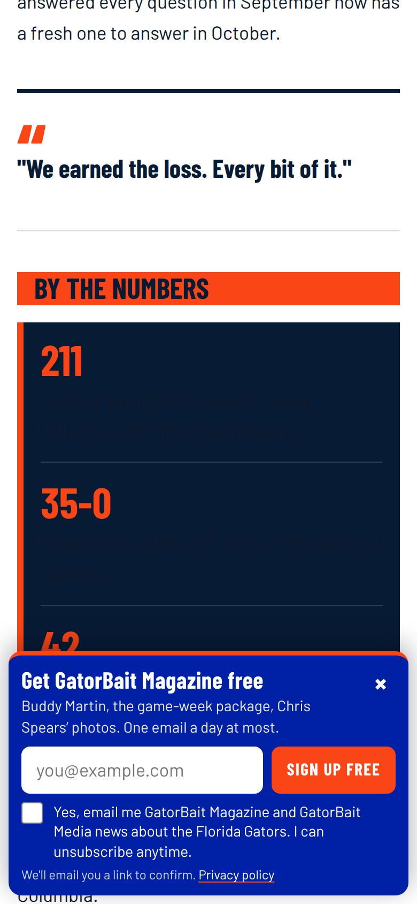
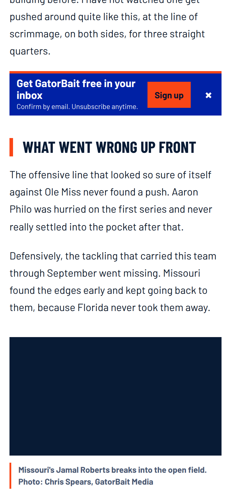
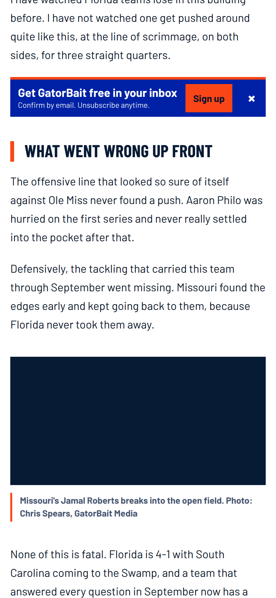
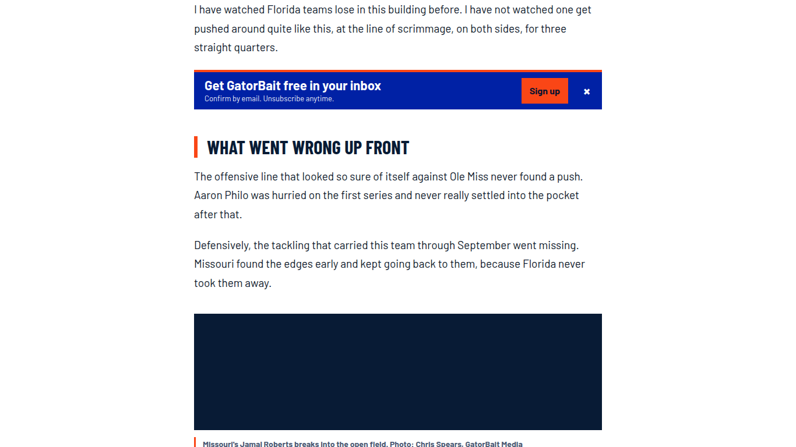
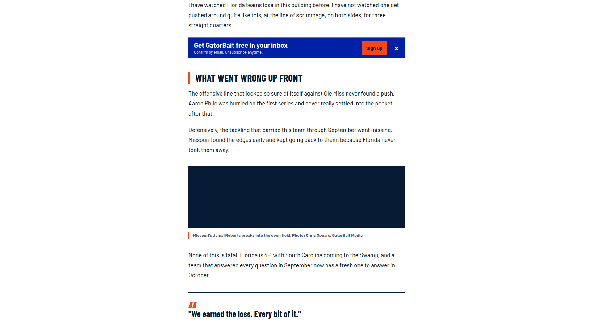

Soft email signup for story pages
One small, dismissible strip after the third paragraph replaces the signup slide-up. It never blocks reading. It has no email box: it sends the reader to a Wix form that uses email confirmation.
The safest working method
A native Wix Forms form on its own page, with double opt-in on. Our strip only links to it. Our code never creates a contact and never calls a Wix API.
- Verified (read-only, today): form
GatorBait Email List(6babfee8) is new Wix Forms, subscribe checkbox is required and unchecked by default, opt-in levelDOUBLE_CONFIRMATIONon EMAIL, spam filterADVANCED. No Velo needed: it is the Subscribe field's "Enable double opt-in" toggle (Wix Help Center, updated Oct. 5), already on. - What email confirmation does: the contact is created with status Subscription Pending (API value
PENDING) and Wix emails a "Confirm Subscription" link. The contact becomes SUBSCRIBED only after the click. No expiry. - How an unconfirmed contact is kept out of sends: by status. Pending is not SUBSCRIBED. Our audience gate (SUBSCRIBED + VALID or NOT_SET, no hold or Do Not Market, de-duplicated) already excludes it, and START-HERE section 7 already requires it. One gap to close: automation
fea566c1adds the audience labels at submission, so a pending contact would carry them. I could not verify from Wix docs that a label-targeted send skips Pending contacts. Do not rely on the label; rely on the status gate, and give the new form its own automation that adds only a source label (step 2). - Source label: the public Forms schema has no label setting on the form, so the label comes from a native user automation (
addLabelsToContact, the same pattern asfea566c1) on a duplicate form:Source: Story Prompt.
Why not the other ways
| Option | Result |
|---|---|
Our JS posts to Wix with a visitor token (today's capture.js) | Rejected. Anyone can make the same call from a script. The only bot defence is a keyword check in the browser (commit fc24650), which a direct call skips. This is the likely path of the Oct. 1 to 6 bot registrations (about 80 contacts). Likely, not proven. |
| Email box in the strip that forwards to Wix | No documented public endpoint that accepts it without that same token. Not used. |
Link to /SUBSCRIBE | Redirects to /pricing-plans/subscribe (paid plans). Wrong page. |
| Wix site-member signup | Creates members, not subscribers. Not the goal. |
What this cannot do
- No signup inside the strip: one extra tap to the form page.
- It does not close the old API path. Removing the UI stops our code from using it; the form stays reachable by anyone with the public client ID. The form's spam filter and double opt-in are the only gates. Whether the ADVANCED filter stops script submissions is unproven (earlier note in
deploy/capture-2026/README.md, item c). - Member hiding is a browser guess (no Velo). See below.
- One label per form. The homepage hub module uses form
6babfee8and keeps its own behaviour.
What renders the slide-up today
Not a Wix app. It is #gbc-bar from sports-live/src/capture.js, bundled in sports-live/share.js and loaded on /post/ pages by embed f285a38c (Share) through sports-live/current.json (now ebc6578). It shows after 50% scroll or 45 s. The Embeds API list (read-only) is cut off by the tool's output cap after 7 of about 50 embeds; none of those 7 renders it. The identification rests on the repo source and the post-template notes (deploy/post-template/README.md), not on a full live embed read.
Measured on a local story page
Local copy of a story page with the live bundle at ebc6578. Screens: 390x844, 430x932, 1366x768, 1920x1080. All 4 sizes pass every check (test.mjs, results.json). Your 47% figure came from the live type audit; the local copy measures lower for the old bar, same fault.
| Screen | Old slide-up | New strip height | New strip on first screen |
|---|---|---|---|
| 390 x 844 | 228 px, 27.0% of screen | 75 px, 8.9% | 1.3% |
| 430 x 932 | 209 px, 22.4% | 62 px, 6.7% | 6.7% |
| 1366 x 768 | 209 px, 27.2% | 68 px, 8.9% | 0% |
| 1920 x 1080 | 209 px, 19.4% | 68 px, 6.3% | 6.3% |
The strip sits in the page flow, not fixed, so it cannot cover text. Worst case on a phone is under 9% of the screen.





Checks that pass at every size: Barlow only; orange #FA4616 and blue #0021A5; 44 px tap targets; no sideways scroll; time trap (nothing renders before a real input event and 2 s); close removes it and the choice is remembered 14 days; storage blocked still works and closes for that page view; simulated member never sees it; header heuristic hides it for a named account button and shows it for "Log In"; reduced motion has no animation; zero calls to Wix APIs.
Member hiding
- Signal: the same one the live shell already uses. If the header's login button (
[data-testid="handle-button"],.login-social-bar button) shows anything other than log in, sign in or join, the reader is treated as signed in and the strip never renders. - Also hidden: readers who signed up in this browser (
gbm-capture-joined), who dismissed in the last 14 days, on posts under 5 real paragraphs, and anyone who already scrolled past the third paragraph. - Limit: a member whose header has not drawn within the page's first moments, or a shell change, can still see it. The cost is one dismissible strip. Not proven on a real member session: I have no member login. Check it once with Brenden's account.
Apply steps (none done)
- Brenden, Wix Editor, about 5 minutes. Add a page
Get GatorBait free, slugget-gatorbait-free, hidden from the menu, SEO "hide from search results". Add a Wix Forms element. First duplicate the form in Dashboard, Forms: name itGatorBait Email List - Story Prompt. Keep the unchecked consent box, double opt-in on, spam protection on. Thank-you message: "Check your inbox and tap Confirm. You are not on the list until you do." (The current form has no thank-you action.) Publish. This is a site publish: it needs Brenden's yes under START-HERE section 3. - Jarvis, Wix Automations, one write recorded in #34. New user-owned automation: trigger "form submitted" on the new form; action add label
Source: Story Promptonly. No audience labels at submit. If Automations offers a "subscription confirmed" trigger, use it to add the audience labels there; if not, leave audience building to the existing status gate. - Jarvis, story lane. Claim "story-page embeds" in #34. Create one new embed
GBM - Soft Signup v1 (story pages): HEAD, ESSENTIAL, loadOnce false, enabled, body =soft-signup.embed.html(about 7 KB). Create, do not PATCH existing embeds (several are near the 15,000 cap). Read it back and compare the fingerprint. No site publish needed for an embed. - Verify live at 390, 430, 1366. A real story page: nothing before input; strip after the third paragraph; old bar gone; close sticks; Brenden's member account sees nothing; the link opens the form page. Then one real signup with Brenden's own address and his yes: contact shows Subscription Pending, becomes SUBSCRIBED after the click, carries
Source: Story Prompt, and is absent from the audience until confirmed. - Follow-up PR, Jarvis (story pages) plus an @Codex ask in #34 (homepage hub). Remove
capture.js's submit path and the slide-up fromshare.js/story-kit.js, rebuild withbuild-front-page.mjs --check, advancesports-live/current.json. The homepage hub module is the Codex lane: ask, do not edit.
Rollback
- Strip off, old bar back: disable the new embed (re-send category ESSENTIAL). The old behaviour returns because the hiding CSS lives in the same embed.
- Page: unpublish or delete
/get-gatorbait-free. Form copy: disable it. Automation: switch it off (Brenden's call under section 3 only if it counts as an automation switch). - No existing embed, form or automation is changed by steps 1 to 4.
What Brenden must decide
- Yes to the one Editor step and the site publish. Recommendation: yes. It is the only way to get a public, double opt-in form without code that anyone can script.
- Accept one extra tap (no email box in the strip) in exchange for closing our own bot path. Recommendation: accept.
Unverified · live member behaviour; whether Wix skips Pending contacts in label-targeted sends; whether the ADVANCED spam filter blocks script submissions; the full list of live embeds (output capped).